Odisha
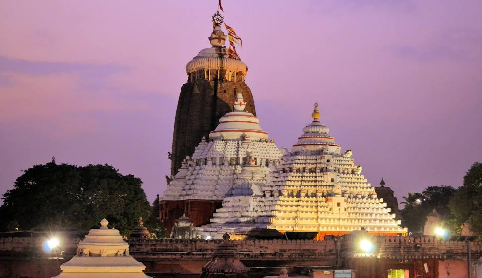This article is about Odisha.
Odisha,formerly Orissa (/ɒˈrɪsə, ɔː-, oʊ-/[17] the official name until 2011), is an Indian state located in Eastern India. It is the eighth-largest state by area, and the eleventh-largest by population, with over 41 million inhabitants. The state also has the third-largest population of Scheduled Tribes in India.[18] It neighbours the states of Jharkhand and West Bengal to the north, Chhattisgarh to the west, and Andhra Pradesh and Telangana to the south. Odisha has a coastline of 485 kilometres (301 mi) along the Bay of Bengal in Indian Ocean.[19] The region is also known as Utkaḷa and is mentioned by this name in India's national anthem, Jana Gana Mana.[20] The language of Odisha is Odia, which is one of the Classical Languages of India.[21] The ancient kingdom of Kalinga, which was invaded by the Mauryan Emperor Ashoka in 261 BCE resulting in the Kalinga War, coincides with the borders of modern-day Odisha.[22] The modern boundaries of Odisha were demarcated by the Indian government when Orissa Province was established on 1 April 1936, consisting of the Odia-speaking districts of Bihar and Orissa Province.[22] The 1st of April is celebrated as Utkala Dibasa (lit. 'Odisha Day').[23] Cuttack was made the capital of the region by Anantavarman Chodaganga in c. 1135,[24] after which the city was used as the capital by many rulers, through the British era until 1948. Thereafter, Bhubaneswar became the capital of Odisha.[25] The economy of Odisha is the 16th-largest state economy in India with ₹5.86 trillion (US$73 billion) in gross domestic product and a per capita GDP of ₹127,383 (US$1,600).[5] Odisha ranks 32nd among Indian states in Human Development Index.
Te has amet modo perfecto, te eum mucius conclusionemque, mel te erat deterruisset. Duo ceteros phaedrum id, ornatus postulant in sea. His at autem inani volutpat. Tollit possit in pri, platonem persecuti ad vix, vel nisl albucius gloriatur no.
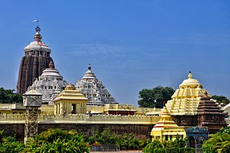 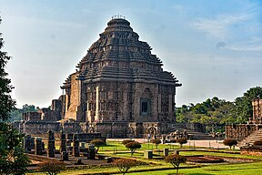 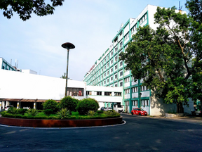 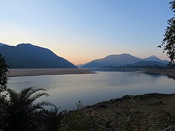Etymology
The terms Odisha and Orissa (Odia: ଓଡ଼ିଶା, Oṛissa) derive from the ancient Prakrit word "Odda Visaya" (also "Udra Bibhasha" or "Odra Bibhasha") as in the Tirumalai inscription of Rajendra Chola I, which is dated to 1025.[27] Sarala Das, who translated the Mahabharata into the Odia language in the 15th century, calls the region 'Odra Rashtra' as Odisha. The inscriptions of Kapilendra Deva of the Gajapati Kingdom (1435–67) on the walls of temples in Puri call the region Odisha or Odisha Rajya.[28] In 2011, the English rendering of ଓଡ଼ିଶା was changed from "Orissa" to "Odisha", and the name of its language from "Oriya" to "Odia", by the passage of the Orissa (Alteration of Name) Bill, 2010 and the Constitution (113th Amendment) Bill, 2010 in the Parliament. The Hindi rendering उड़ीसा (uṛīsā) was also modified to ओड़िशा (or̥iśā). After a brief debate, the lower house, Lok Sabha, passed the bill and amendment on 9 November 2010.[29] On 24 March 2011, Rajya Sabha, the upper house of Parliament, also passed the bill and the amendment.[30] The changes in spelling were made with the intention of having the English and Hindi renditions conform to the Odia transliteration.[31] However, the underlying Odia texts were nevertheless transliterated incorrectly as per the Hunterian system, the official national transliteration standard, in which the transliterations would be Orisha and Oria instead.

- 1History
- 2Geography
- 3Climate
- 4Biodiversity
- 5Government and politics
- 6Legislative assembly
- 7Subdivisions
- 8Economy
- 9Transportation
- 10Demographics
- 11Religion
- 12Languages
- 13Educational institutions
- 14Culture
- 15Cuisine
- 16Dance
- 17Sports
- 18Tourism
History
Prehistoric Acheulian tools dating to Lower Paleolithic era have been discovered in various places in the region, implying an early settlement by humans.[32] Kalinga has been mentioned in ancient texts like Mahabharata, Vayu Purana and Mahagovinda Suttanta.[33][34]
According to political scientist Sudama Misra, the Kalinga janapada originally comprised the area covered by the Puri and Ganjam districts.[35] The Sabar people of Odisha have also been mentioned in the Mahabharata.[36][37] Baudhayana mentions Kalinga as not yet being influenced by Vedic traditions, implying it followed mostly tribal traditions.
Ashoka of the Mauryan dynasty conquered Kalinga in the bloody Kalinga War in 261 BCE,[39] which was the eighth year of his reign.[40] According to his own edicts, in that war about 100,000 people were killed, 150,000 were captured and more were affected.[39] The resulting bloodshed and suffering of the war is said to have deeply affected Ashoka. He turned into a pacifist and converted to Buddhism.
By c. 150 BCE, Emperor Kharavela, who was possibly a contemporary of Demetrius I of Bactria,[42] conquered a major part of the Indian sub-continent. Kharavela was a Jain ruler. He also built the monastery atop the Udayagiri hill.[43] Subsequently, the region was ruled by monarchs, such as Samudragupta[44] and Shashanka.[45] It was also a part of Harsha's empire.
The city of Brahmapur in Odisha is also known to have been the capital of the Pauravas during the closing years of 4th century CE. Nothing was heard from the Pauravas from about the 3rd century CE, because they were annexed by the Yaudheya Republic, who in turn submitted to the Mauryans. It was only at the end of 4th century CE, that they established royalty at Brahmapur, after about 700 years.
Later, the kings of the Somavamsi dynasty began to unite the region. By the reign of Yayati II, c. 1025 CE, they had integrated the region into a single kingdom. Yayati II is supposed to have built the Lingaraj temple at Bhubaneswar.[22] They were replaced by the Eastern Ganga dynasty. Notable rulers of the dynasty were Anantavarman Chodaganga, who began reconstruction on the present-day Shri Jagannath Temple in Puri (c. 1135), and Narasimhadeva I, who constructed the Konark temple (c. 1250).
The Eastern Ganga Dynasty was followed by the Gajapati Kingdom. The region resisted integration into the Mughal empire until 1568, when it was conquered by Sultanate of Bengal.[49] Mukunda Deva, who is considered the last independent king of Kalinga, was defeated and was killed in battle by a rebel Ramachandra Bhanja. Ramachandra Bhanja himself was killed by Bayazid Khan Karrani.[50] In 1591, Man Singh I, then governor of Bihar, led an army to take Odisha from the Karranis of Bengal. They agreed to treaty because their leader Qutlu Khan Lohani had recently died. But they then broke the treaty by attacking the temple town of Puri. Man Singh returned in 1592 and pacified the region.
In 1751, the Nawab of Bengal Alivardi Khan ceded the region to the Maratha Empire
The British had occupied the Northern Circars, comprising the southern coast of Odisha, as a result of the Second Carnatic War by 1760, and incorporated them into the Madras Presidency gradually.[52] In 1803, the British ousted the Marathas from the Puri-Cuttack region of Odisha during the Second Anglo-Maratha War. The northern and western districts of Odisha were incorporated into the Bengal Presidency.
The Orissa famine of 1866 caused an estimated 1 million deaths.[54] Following this, large-scale irrigation projects were undertaken.[55] In 1903, the Utkal Sammilani organisation was founded to demand the unification of Odia-speaking regions into one state.[56] On 1 April 1912, the Bihar and Orissa Province was formed.[57] On 1 April 1936, Bihar and Orissa were split into separate provinces.[58] The new province of Orissa came into existence on a linguistic basis during the British rule in India, with Sir John Austen Hubback as the first governor.[58][59] Following India's independence, on 15 August 1947, 27 princely states signed the document to join Orissa.[60] Most of the Orissa Tributary States, a group of princely states, acceded to Orissa in 1948, after the collapse of the Eastern States Union.
Geography
Odisha lies between the latitudes 17.780N and 22.730N, and between longitudes 81.37E and 87.53E. The state has an area of 155,707 km2, which is 4.87% of total area of India, and a coastline of 450 km.[62] In the eastern part of the state lies the coastal plain. It extends from the Subarnarekha River in the north to the Rushikulya River in the south. The lake Chilika is part of the coastal plains. The plains are rich in fertile silt deposited by the six major rivers flowing into the Bay of Bengal: Subarnarekha, Budhabalanga, Baitarani, Brahmani, Mahanadi and Rushikulya.[62] The Central Rice Research Institute (CRRI), a Food and Agriculture Organization-recognised rice gene bank and research institute, is situated on the banks of Mahanadi in Cuttack.[63] The stretch between Puri and Bhadrak in Odisha juts out a little into the sea, making it vulnerable to any cyclonic activity.Satellite view of the Mahanadi river delta.
Three-quarters of the state is covered in mountain ranges. Deep and broad valleys have been made in them by rivers. These valleys have fertile soil and are densely populated. Odisha also has plateaus and rolling uplands, which have lower elevation than the plateaus.[62] The highest point in the state is Deomali at 1,672 metres in Koraput district. Some other high peaks are: Sinkaram (1,620 m), Golikoda (1,617 m), and Yendrika (1,582 metres).
Climate
The state experiences four meteorological seasons: winter (January to February), pre-monsoon season (March to May), south-west monsoon season (June to September) and north east monsoon season (October–December). However, locally the year is divided into six traditional seasons (or rutus): Grishma (summer), Barsha (rainy season), Sharata (autumn), Hemanta (dewy),Sheeta(winter season) and Basanta (spring).
| Mean Temp and Precipitation of Selected Weather Stations[66] | ||||||||||||
|---|---|---|---|---|---|---|---|---|---|---|---|---|
| Bhubaneswar (1952–2000) |
Balasore (1901–2000) |
Gopalpur (1901–2000) |
Sambalpur (1901–2000) | |||||||||
| Max (°C) | Min (°C) | Rainfall (mm) | Max (°C) | Min (°C) | Rainfall (mm) | Max (°C) | Min (°C) | Rainfall (mm) | Max (°C) | Min (°C) | Rainfall (mm) | |
| January | 28.5 | 15.5 | 13.1 | 27.0 | 13.9 | 17.0 | 27.2 | 16.9 | 11.0 | 27.6 | 12.6 | 14.2 |
| February | 31.6 | 18.6 | 25.5 | 29.5 | 16.7 | 36.3 | 28.9 | 19.5 | 23.6 | 30.1 | 15.1 | 28.0 |
| March | 35.1 | 22.3 | 25.2 | 33.7 | 21.0 | 39.4 | 30.7 | 22.6 | 18.1 | 35.0 | 19.0 | 20.9 |
| April | 37.2 | 25.1 | 30.8 | 36.0 | 24.4 | 54.8 | 31.2 | 25.0 | 20.3 | 39.3 | 23.5 | 14.2 |
| May | 37.5 | 26.5 | 68.2 | 36.1 | 26.0 | 108.6 | 32.4 | 26.7 | 53.8 | 41.4 | 27.0 | 22.7 |
| June | 35.2 | 26.1 | 204.9 | 34.2 | 26.2 | 233.4 | 32.3 | 26.8 | 138.1 | 36.9 | 26.7 | 218.9 |
| July | 32.0 | 25.2 | 326.2 | 31.8 | 25.8 | 297.9 | 31.0 | 26.1 | 174.6 | 31.1 | 24.9 | 459.0 |
| August | 31.6 | 25.1 | 366.8 | 31.4 | 25.8 | 318.3 | 31.2 | 25.9 | 195.9 | 30.7 | 24.8 | 487.5 |
| September | 31.9 | 24.8 | 256.3 | 31.7 | 25.5 | 275.8 | 31.7 | 25.7 | 192.0 | 31.7 | 24.6 | 243.5 |
| October | 31.7 | 23.0 | 190.7 | 31.3 | 23.0 | 184.0 | 31.4 | 23.8 | 237.8 | 31.7 | 21.8 | 56.6 |
| November | 30.2 | 18.8 | 41.7 | 29.2 | 17.8 | 41.6 | 29.5 | 19.7 | 95.3 | 29.4 | 16.2 | 17.6 |
| December | 28.3 | 15.2 | 4.9 | 26.9 | 13.7 | 6.5 | 27.4 | 16.4 | 11.4 | 27.2 | 12.1 | 4.8 |
Biodiversity
According to a Forest Survey of India report released in 2012, Odisha has 48,903 km2 of wild forest, covering 31.41% of the state's total area. The forests are classified into areas of dense forest (7,060 km2), medium dense forest (21,366 km2), open forest (forest without closed canopy; 20,477 km2) and scrub forest or scrubland (4,734 km2). The state also has bamboo forests (10,518 km2) and tidal areas of mangrove swamp (221 km2). The state is gradually losing its wilderness areas to timber smuggling, deforestation, destructive mining, and general urban industrialisation, as well as livestock grazing. There have been attempts at conservation and reforestation.
Due to the climate and good rainfall, Odisha's evergreen and moist forests are uniquely suitable habitats for wild orchids. Around 130 species have been reported from the state.[68] Around 97 of them are found in Mayurbhanj district alone. The Orchid House of the Nandankanan Zoological Park maintains some of these species.
Simlipal National Park is a protected wildlife area and Bengal tiger reserve spread over 2,750 km2 of the northern part of Mayurbhanj district. The park has around 1,078 species of plants, including 94 of the aforementioned orchids. The sal is the primary tree species. For fauna, the park is home to around 55 species of mammal, including the Bengal tiger, chital, chousingha, common langur, gaur, Indian elephant, Indian giant squirrel, jungle cat, leopard, muntjac, sambar, small Indian civet and wild boar. There are over 300 species of birds in the park, such as the common hill myna, as well as grey, Indian pied and Malabar pied hornbills. There are also some 60 species of reptiles and amphibians, including the famed king cobra, plus banded krait and tricarinate hill turtle. There is also a mugger crocodile breeding programme in nearby Ramtirtha.
The Chandaka Elephant Sanctuary is a 190 km2 protected area near the capital city, Bhubaneswar. However, urban expansion and over-grazing have reduced the forests, driving the herds of elephants to migrate away, as well as increasing human-elephant conflicts—which sometimes results in injury and death (on both sides). Some elephants have died in conflicts with villagers, while some have died during migration after being accidentally electrocuted by power lines or even hit by trains. Outside the protected area, they are killed by ivory poachers. In 2002, there were about 80 elephants, but by 2012, their numbers had been reduced to 20. Many of the animals have migrated toward the Barbara Reserve forest, Chilika, Nayagarh district, and Athagad.[71][72] Besides elephants, the sanctuary also has leopards, jungle cats and herds of chital.
The Bhitarkanika National Park in Kendrapara district covers 650 km2, of which 150 km2 are mangroves. Gahirmatha Beach, in Bhitarkanika, is the world's largest nesting site for olive ridley sea turtles.[74] In 2013, the Indian Coast Guard initiated Operation Oliver to protect the endangered sea turtle population of the region.[75] Other major nesting grounds for the turtle in the state are Rushikulya, in Ganjam district,[76] and the mouth of the Devi river.[77] The Bhitarkanika sanctuary is also noted for its large population of saltwater crocodiles and Asian water monitors,[78] the second-largest lizard species on earth,[79] in addition to axis deer and rhesus macaques.[78] The coastal mangrove environments are home to several types of mudskippers, including the barred, Boddart's blue-spotted and great blue-spotted mudskippers.
In winter, Bhitarkanika is also visited by migratory birds. Among the many species, both resident and migratory, are kingfishers (including black-capped, collared and common kingfishers), herons (such as black-crowned night, grey, purple and striated herons), Indian cormorants, openbill storks, Oriental white ibis, pheasant-tailed jacana, sarus cranes, spotted owlets and white-bellied sea-eagles.[80][78] The possibly endangered horseshoe crab is also found in this region.
Chilika Lake is a brackish water lagoon on the east coast of Odisha with an area of 1,105 km2. It is connected to the Bay of Bengal by a 35-km-long narrow channel and is a part of the Mahanadi delta. In the dry season, the tides bring in salt water. In the rainy season, the rivers falling into the lagoon decrease its salinity.[82] Birds from places as far as the Caspian Sea, Lake Baikal (and other parts of Russia), Central Asia, Southeast Asia, Ladakh and the Himalayas migrate to the lagoon in winter.[83] Among the waterfowl and wading birds spotted there are Eurasian wigeon, pintail, bar-headed goose, greylag goose, greater flamingo, common mallard and Goliath heron.[84][85] The lagoon also has a small population of the endangered Irrawaddy dolphins.[86] The state's coastal region has also had sightings of the rare finless porpoise, as well as the more common bottlenose dolphin, humpback dolphin and spinner dolphins in its waters.
Satapada is situated close to the northeast cape of Chilika Lake and Bay of Bengal. It is famous for dolphin watching in their natural habitat. There is a tiny island en route for watching dolphins, where tourists often take a short stop. Apart from that, this island is also home for tiny red crabs.
According to a census conducted in 2016, there are around 2000 elephants in the state.
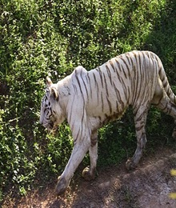 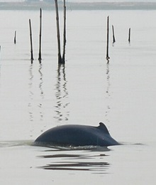 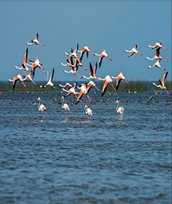 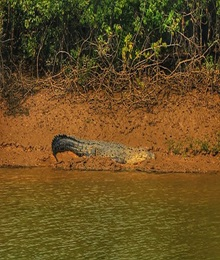 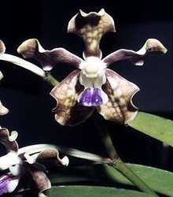Government and politics
All states in India are governed by a parliamentary system of government based on universal adult franchise.[90][91] The main parties active in the politics of Odisha are the Biju Janata Dal, the Indian National Congress and Bharatiya Janata Party. Following the Odisha State Assembly Election in 2019, the Naveen Patnaik-led Biju Janata Dal stayed in power for the sixth consecutive term, he is the 14th chief minister of Odisha since 2000
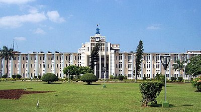Legislative assembly
The Odisha state has a unicameral legislature.[93] The Odisha Legislative Assembly consists of 147 elected members,[92] and special office bearers such as the Speaker and Deputy Speaker, who are elected by the members. Assembly meetings are presided over by the Speaker, or by the Deputy Speaker in the Speaker's absence.[94] Executive authority is vested in the Council of Ministers headed by the Chief Minister, although the titular head of government is the Governor of Odisha. The governor is appointed by the President of India. The leader of the party or coalition with a majority in the Legislative Assembly is appointed as the Chief Minister by the governor, and the Council of Ministers are appointed by the governor on the advice of the Chief Minister. The Council of Ministers reports to the Legislative Assembly.[95] The 147 elected representatives are called Members of the Legislative Assembly, or MLAs. One MLA may be nominated from the Anglo-Indian community by the governor.[96] The term of the office is for five years, unless the Assembly is dissolved prior to the completion of the term.[94] The judiciary is composed of the Odisha High Court, located at Cuttack, and a system of lower courts.
Subdivisions
Odisha has been divided into 30 districts. These 30 districts have been placed under three different revenue divisions to streamline their governance. The divisions are North, Central and South, with their headquarters at Sambalpur, Cuttack and Berhampur respectively. Each division consists of ten districts and has as its administrative head a Revenue Divisional Commissioner (RDC).[97] The position of the RDC in the administrative hierarchy is that between that of the district administration and the state secretariat.[98] The RDCs report to the Board of Revenue, which is headed by a senior officer of the Indian Administrative Service.
| Northern Division (HQ – Sambalpur) | Central Division (HQ – Cuttack) | Southern Division (HQ – Berhampur) |
|---|---|---|
Each district is governed by a collector and district magistrate, who is appointed from the Indian Administrative Service or a very senior officer from Odisha Administrative Service.[100][101] The collector and district magistrate is responsible for collecting the revenue and maintaining law and order in the district. Each district is separated into sub-divisions, each governed by a sub-collector and sub-divisional magistrate. The sub-divisions are further divided into tahasils. The tahasils are headed by tahasildar. Odisha has 58 sub-divisions, 317 tahasils and 314 blocks.[99] Blocks consists of Panchayats (village councils) and town municipalities. The capital and largest city of the state is Bhubaneswar. The other major cities are Cuttack, Rourkela, Berhampur and Sambalpur. Municipal Corporations in Odisha include Bhubaneswar, Cuttack, Berhampur, Sambalpur and Rourkela. Other municipalities of Odisha include Angul, Balangir, Balasore, Barbil, Bargarh, Baripada, Basudevpur, Belpahar, Bhadrak, Bhanjanagar, Bhawanipatna, Biramitrapur, Boudh, Brajarajnagar, Byasanagar, Chhatrapur, Deogarh, Dhenkanal, Gopalpur, Gunupur, Hinjilicut, Jagatsinghpur, Jajpur, Jeypore, Jharsuguda, Joda, Kendrapara, Kendujhar, Khordha, Konark, Koraput, Malkangiri, Nabarangpur, Nayagarh, Nuapada, Paradeep, Paralakhemundi, Phulbani, Puri, Rajgangpur, Rayagada, Sonepur, Sundargarh, Talcher, Titilagarh, Karanjia, Chatrapur, Asika, Kantabanji, Baudhgarh, and Umerkote.
Economy
Macro-economic trend
Odisha is experiencing a rapid economic growth post-Covid. The impressive growth in gross domestic product of the state has been reported by the Ministry of Statistics and Programme Implementation. Odisha's growth rate is above the national average.[102] The central Government's Urban Development Ministry has recently announced the names of 20 cities selected to be developed as smart cities. The state capital Bhubaneswar is the first city in the list of smart Cities released in January 2016, a pet project of the Indian Government. The announcement also marked with sanction of Rs 508.02 billion over the five years for developmentIndustrial development
Odisha has abundant natural resources and a large coastline. Odisha has emerged as the most preferred destination for overseas investors with investment proposals.[104] It contains a fifth of India's coal, a quarter of its iron ore, a third of its bauxite reserves and most of the chromite. Rourkela Steel Plant[105] was the first integrated steel plant in the public sector in India, built with collaboration of Germany. Arcelor-Mittal has also announced plans to invest in another mega steel project amounting to $10 billion. Russian major Magnitogorsk Iron and Steel Company (MMK) plans to set up a 10 MT steel plant in Odisha, too. Nippon Steel Corporation has recently announced to set up their own plants, one of which will be the world's largest and most advanced steel plant in Odisha, with a production capacity of 30 MT annually.[106] Bandhabahal is a major area of open cast coal mines in Odisha. The state is attracting an unprecedented amount of investment in aluminium, coal-based power plants, petrochemicals, and information technology as well. In power generation, Reliance Power (Anil Ambani Group) is putting up the world's largest power plant with an investment of US$13 billion at Hirma in Jharsuguda district.[107] In 2009 Odisha was the second top domestic investment destination with Gujarat first and Andhra Pradesh in third place according to an analysis of ASSOCHAM Investment Meter (AIM) study on corporate investments. Odisha's share was 12.6 per cent in total investment in the country. It received an investment proposal worth ₹2.01 trillion (equivalent to ₹4.5 trillion or US$56 billion in 2023) in 2010. Steel and power were among the sectors which attracted maximum investments in the state.[108] The recently concluded Make in Odisha Conclave 2022 saw the state generate investment proposals worth ₹10.5 trillion with an employment potential for 10,37,701 people. Out of the total investment proposals received, the metals, ancillary and downstream sectors fetched ₹5.50 lakhs crore (trillion), power, green energy, and renewable energy sector fetched ₹2.38 trillion, and chemicals-petrochemicals and logistics-infrastructure sector attracted ₹76,000 crores and ₹1.20 trillion, respectively. Odisha has the potential to become a trillion-dollar economy by 2030.
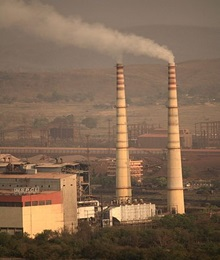
Transportation
Odisha has a network of roads, railways, airports and seaports. Bhubaneswar is well connected by air, rail and road with the rest of India. Some highways are getting expanded to four lanes.[109][110] Odisha Government Plans Mega Metro Rail Project to Connect Puri and Bhubaneswar [111] The metro rail proposal was given to connect trains between Puri- Bhubaneswar – Cuttack.[112] The Odisha government has planned a new Expressway that will connect Biju Patnaik International Airport airport at Bhubaneswar with the proposed Shri Jagannath International Airport at Puri.
Air
Odisha has a total of three operational airports, 16 airstrips and 16 helipads.[114][115][116] The airport at Jharsuguda was upgraded to a full-fledged domestic airport in May 2018. Rourkela Airport became operational in December 2022.The Dhamra Port Company Limited plans to build Dhamra Airport 20 km from Dhamra Port.
- 1.Bhubaneswar – Biju Patnaik International Airport
- 2.Jeypore – Jeypore Airport
- 3.Jharsuguda – Veer Surendra Sai Airport
- 4.Rourkela – Rourkela Airport
- 5.Berhampur – Rangeilunda Airport
- 6.Bhawanipatna - Utkela Airport
Railways
Major cities of Odisha are well connected to all the major cities of India by direct daily trains and weekly trains. Most of the railway network in Odisha lies under the jurisdiction of the East Coast Railway (ECoR) with headquarters at Bhubaneswar and some parts under South Eastern Railway and South East Central Railway.
Seaports
Odisha has a coastline of 485 kilometres (301 mi). It has one major port at Paradip and few minor ports. some of them are
Demographics
According to the 2011 census of India, the total population of Odisha is 41,974,218, of which 21,212,136 (50.54%) are male and 20,762,082 (49.46%) are female, or 978 females per 1000 males. This represents a 13.97% increase over the population in 2001. The population density is 270 per km2.
The literacy rate is 73%, with 82% of males and 64% of females being literate, according to the 2011 census.
The proportion of people living below the poverty line in 2004–2005 was 57.15% which was nearly double the Indian average of 26.10%. Since 2005 the state has reduced poverty rate dramatically by 24.6 percentage points. According to current estimate proportion of people living under poverty line was 32.6%
Data of 1996–2001 showed the life expectancy in the state was 61.64 years, higher than the national value of years. The state has a birth rate of 23.2 per 1,000 people per year, a death rate of 9.1 per 1,000 people per year, an infant mortality rate of 65 per 1000 live birth and a maternal mortality rate of 358 per 1,000,000 live births. Odisha has a Human Development Index of 0.606 as of 2018.
| District | Headquarters | Population (2011) |
Males | Females | Percentage decadal growth 2001–2011 |
Sex ratio | Density (persons per km2) |
Child population 0–6 years |
Child sex ratio |
Literacy rate |
|---|---|---|---|---|---|---|---|---|---|---|
| Angul | Angul | 1,271,703 | 654,898 | 616,805 | 11.55 | 942 | 199 | 145,690 | 884 | 78.96 |
| Balangir | Balangir | 1,648,574 | 831,349 | 817,225 | 23.29 | 983 | 251 | 206,964 | 951 | 65.50 |
| Balasore | Baleswar | 2,317,419 | 1,184,371 | 1,133,048 | 14.47 | 957 | 609 | 274,432 | 941 | 80.66 |
| Bargarh | Bargarh | 1,478,833 | 748,332 | 730,501 | 9.84 | 976 | 253 | 156,185 | 946 | 75.16 |
| Bhadrak | Bhadrak | 1,506,522 | 760,591 | 745,931 | 12.95 | 981 | 601 | 176,793 | 931 | 83.25 |
| Boudh | Boudh | 439,917 | 220,993 | 218,924 | 17.82 | 991 | 142 | 59,094 | 975 | 72.51 |
| Cuttack | Cuttack | 2,618,708 | 1,339,153 | 1,279,555 | 11.87 | 955 | 666 | 251,152 | 913 | 84.20 |
| Debagarh | Debagarh | 312,164 | 158,017 | 154,147 | 13.88 | 976 | 106 | 38,621 | 917 | 73.07 |
| Dhenkanal | Dhenkanal | 1,192,948 | 612,597 | 580,351 | 11.82 | 947 | 268 | 132,647 | 870 | 79.41 |
| Gajapati | Paralakhemundi | 575,880 | 282,041 | 293,839 | 10.99 | 1,042 | 133 | 82,777 | 964 | 54.29 |
| Ganjam | Chhatrapur | 3,520,151 | 1,777,324 | 1,742,827 | 11.37 | 981 | 429 | 397,920 | 899 | 71.88 |
| Jagatsinghpur | Jagatsinghpur | 1,136,604 | 577,699 | 558,905 | 7.44 | 967 | 681 | 103,517 | 929 | 87.13 |
| Jajpur | Jajpur | 1,826,275 | 926,058 | 900,217 | 12.43 | 972 | 630 | 207,310 | 921 | 80.44 |
| Jharsuguda | Jharsuguda | 579,499 | 297,014 | 282,485 | 12.56 | 951 | 274 | 61,823 | 938 | 78.36 |
| Kalahandi | Bhawanipatna | 1,573,054 | 785,179 | 787,875 | 17.79 | 1,003 | 199 | 214,111 | 947 | 60.22 |
| Kandhamal | Phulbani | 731,952 | 359,401 | 372,551 | 12.92 | 1,037 | 91 | 106,379 | 960 | 65.12 |
| Kendrapara | Kendrapara | 1,439,891 | 717,695 | 722,196 | 10.59 | 1,006 | 545 | 153,443 | 921 | 85.93 |
| Kendujhar | Kendujhar | 1,802,777 | 907,135 | 895,642 | 15.42 | 987 | 217 | 253,418 | 957 | 69.00 |
| Khordha | Khordha | 2,246,341 | 1,166,949 | 1,079,392 | 19.65 | 925 | 799 | 222,275 | 910 | 87.51 |
| Koraput | Koraput | 1,376,934 | 677,864 | 699,070 | 16.63 | 1,031 | 156 | 215,518 | 970 | 49.87 |
| Malkangiri | Malkangiri | 612,727 | 303,913 | 308,814 | 21.53 | 1,016 | 106 | 105,636 | 979 | 49.49 |
| Mayurbhanj | Baripada | 2,513,895 | 1,253,633 | 1,260,262 | 13.06 | 1,005 | 241 | 337,757 | 952 | 63.98 |
| Nabarangapur | Nabarangpur | 1,218,762 | 604,046 | 614,716 | 18.81 | 1,018 | 230 | 201,901 | 988 | 48.20 |
| Nayagarh | Nayagarh | 962,215 | 502,194 | 460,021 | 11.30 | 916 | 247 | 101,337 | 851 | 79.17 |
| Nuapada | Nuapada | 606,490 | 300,307 | 306,183 | 14.28 | 1,020 | 157 | 84,893 | 971 | 58.20 |
| Puri | Puri | 1,697,983 | 865,209 | 832,774 | 13.00 | 963 | 488 | 164,388 | 924 | 85.37 |
| Rayagada | Rayagada | 961,959 | 469,672 | 492,287 | 15.74 | 1,048 | 136 | 141,167 | 955 | 50.88 |
| Sambalpur | Sambalpur | 1,044,410 | 529,424 | 514,986 | 12.24 | 973 | 158 | 112,946 | 931 | 76.91 |
| Subarnapur | Sonepur | 652,107 | 332,897 | 319,210 | 20.35 | 959 | 279 | 76,536 | 947 | 74.42 |
| Sundergarh | Sundergarh | 2,080,664 | 1,055,723 | 1,024,941 | 13.66 | 971 | 214 | 249,020 | 937 | 74.13 |
Religion
The majority (almost 94%[124]) of people in Odisha are Hindu and there is also a rich cultural heritage in the state. For example, Odisha is home to several Hindu figures. Sant Bhima Bhoi was a leader of the Mahima sect. Sarala Das, a Hindu Khandayat, was the translator of the epic Mahabharata into Odia. Chaitanya Das was a Buddhistic-Vaishnava and writer of the Nirguna Mahatmya. Jayadeva was the author of the Gita Govinda.
The Odisha Temple Authorisation Act of 1948 empowered the government of Odisha to open temples for all Hindus, including Dalits.[125]
Perhaps the oldest scripture of Odisha is the Madala Panji from the Puri Temple believed from 1042 AD. Famous Hindu Odia scripture includes the 16th-century Bhagabata of Jagannatha Dasa.[126] In the modern times Madhusudan Rao was a major Odia writer, who was a Brahmo Samajist and shaped modern Odia literature at the start of the 20th century.
Christians in Odisha are 2.8% of the population, mainly tribals and Dalits. Odia Muslims live in the urban areas of coastal Odisha. The Sikh, Buddhist and Jain communities together account for 0.1% of the population.

Religion in Odisha (2011)[124]
Languages
Odia is the official language of Odisha[129] and is spoken by 82.70% of the population according to the 2011 census of India.[128] It is also one of the classical languages of India. English is the official language of correspondence between state and the union of India. Spoken Odia is not homogeneous as one can find different dialects spoken across the state. Some of the major dialects found inside the state are Sambalpuri, Cuttacki, Puri, Baleswari, Ganjami, Desiya, Kalahandia and Phulbani. The standard language is based on the Cuttacki dialect. In addition to Odia, significant populations of people speaking other major Indian languages like Hindi, Telugu, Urdu and Bengali are also found in the state, mainly in cities.
The different tribal (Adivasi) communities who mostly reside in western and southern Odisha have their own languages belonging to Munda and Dravidian family of languages. Some of these major tribal languages are Santali, Kui, Mundari and Ho. Due to increasing contact with outsiders, migration and socioeconomic reasons many of these indigenous languages are slowly getting extinct or are on the verge of getting extinct.
The Odisha Sahitya Academy Award was established in 1957 to actively develop Odia language and literature. The Odisha government launched a portal in 2018 to promote Odia language and literature.
Educational institutions
- AIPH University at Bhubaneswar
- Indian Institutes of Handloom Technology(IIHT Bargarh) at Bargarh
- Indian Institute of Tourism and Travel Management (IITTM BBSR) at Bhubaneswar
- C. V. Raman Global University (CVRGU) at Bhubaneswar
- Regional Institute of Education (RIE BBSR) at Bhubaneswar
- Indian Institute of Technology Bhubaneswar (IIT BBS) at Bhubaneswar
- National Institute of Science Education and Research (NISER) at Bhubaneswar
- National Institute of Technology Rourkela (NIT) at Rourkela
- Indian Institute of Management (IIM-SB) at Sambalpur
- Indian Institutes of Science Education and Research (IISER BPR) at Brahmapur
- All India Institute of Medical Sciences (AIIMS) at Bhubaneswar
- Veer Surendra Sai University of Technology (VSSUT) at Burla
- National Law University at Cuttack
- International Institute of Information Technology (IIIT) at Bhubaneswar
- Berhampur University at Brahmapur
- Biju Patnaik University of Technology at Rourkela
- Ispat Autonomous College, Rourkela
- Buxi Jagabandhu Bidyadhar College at Bhubaneswar
- Central University of Odisha at Koraput
- Christ College at Cuttack
- College of Agriculture, Bhawanipatna
- Dharanidhar College at Keonjhar
- Fakir Mohan University at Balasore
- Gangadhar Meher University at Sambalpur
- Government College of Engineering, Kalahandi at Bhawanipatna
- Hi-Tech Medical College & Hospital, Bhubaneswar at Bhubaneswar
- Indira Gandhi Institute of Technology at Sarang
- Government College of Engineering, Keonjhar at Keonjhar
- KIIT University at Bhubaneswar
- Khallikote Unitary University at Brahmapur
- Maharaja Krishna Chandra Gajapati Medical College and Hospital at Brahmapur
- National Institute of Science and Technology at Brahmapur
- Maharaja Sriram Chandra Bhanja Deo University at Baripada
- Odisha State Open University at Sambalpur
- Orissa Engineering College at Bhubaneswar
- Odisha University of Agriculture and Technology (OUAT) at Bhubaneswar
- Odisha University of Health Sciences (OUHS) at Bhubaneswar
- Odisha University of Technology and Research (OUTR) at Bhubaneswar
- Parala Maharaja Engineering College at Brahmapur
- Rama Devi Women's University at Bhubaneswar
- Ravenshaw University at Cuttack
- Sambalpur University at Sambalpur
- Sambalpur University Institute of Information Technology Sambalpur
- Shri Ramachandra Bhanj Medical College at Cuttack
- Siksha O Anusandhan University at Bhubaneswar
- Utkal University at Bhubaneswar
- Utkal University of Culture at Bhubaneswar
- veer Surendra Sai Institute of Medical Sciences and Research (VIMSAR) at Burla, Sambalpur
- Xavier Institute of Management, Bhubaneswar
- XIM University, Bhubaneswar
- Institute of Mathematics and Applications, Bhubaneswar
- Sri Sri University at Cuttack
- DRIEMS University at Tangi, Cuttack
- Bhadrak Autonomous College at Bhadrak
- Centurion University at Jatni, Bhubaneswar
- Stewart School at Buxibazar, Cuttack
- National Institute of Rehabilitation Training and Research at Cuttack
- National Institute of Social Work and Social Science, Bhubaneswar (NISWASS)
- Rajendra Narayan University Balangir
- Kalahandi University Bhawanipatna
- Bhima Bhoi Medical College and Hospital Balangir
- Pandit Raghunath Murmu Medical College and Hospital, Baripada[133]
- Saheed Laxman Nayak Medical College and Hospital, Koraput
Entry to various institutes of higher education especially into engineering degrees is through a centralised Odisha Joint Entrance Examination, conducted by the Biju Patnaik University of Technology (BPUT), Rourkela, since 2003, where seats are provided according to order of merit.[135] Few of the engineering institutes enroll students by through Joint Entrance Examination. For medical courses, there is a corresponding National Eligibility Cum Entrance Test.
Culture
Cuisine
Odisha has a culinary tradition spanning centuries. The kitchen of the Shri Jagannath Temple, Puri is reputed to be the largest in the world, with 1,000 chefs, working around 752 wood-burning clay hearths called chulas, to feed over 10,000 people each day.
The syrupy dessert Pahala rasagola made in Odisha is known throughout the world.[138] Chhenapoda is another major Odisha sweet cuisine, which originated in Nayagarh.[139] Dalma (a mix of dal and selected vegetables) is widely known cuisine, better served with ghee.
The "Odisha Rasagola" was awarded a GI tag 29 July 2019 after a long battle about the origin of the famous sweet with West Bengal.

Dance
Odissi dance and music are classical art forms. Odissi is the oldest surviving dance form in India on the basis of archaeological evidence.[141] Odissi has a long, unbroken tradition of 2,000 years, and finds mention in the Natyashastra of Bharatamuni, possibly written c. 200 BC. However, the dance form nearly became extinct during the British period, only to be revived after India's independence by a few gurus.
Odissi dance and music are classical art forms. Odissi is the oldest surviving dance form in India on the basis of archaeological evidence.[141] Odissi has a long, unbroken tradition of 2,000 years, and finds mention in the Natyashastra of Bharatamuni, possibly written c. 200 BC. However, the dance form nearly became extinct during the British period, only to be revived after India's independence by a few gurus.

Sports
The state of Odisha has hosted several international sporting events, including the 2018 Men's Hockey World Cup, 2022 FIFA U-17 Women's World Cup and 2023 Men's Hockey World Cup.
Sports stadiums in Odisha include:
- Kalinga Stadium
- Barabati Stadium
- Jawaharlal Nehru Indoor Stadium
- East Coast Railway Stadium
- Biju Patnaik Hockey Stadium
- KIIT Stadium
- Veer Surendra Sai Stadium
- Birsa Munda International Hockey Stadium
There are some High Performance Centres in the state as well which have been set up at Kalinga Stadium for the development of respective sports in Odisha. Some of the HPCs are as follows:
- Abhinav Bindra Targeting Performance (ABTP)
- Dalmia Bharat Gopichand Badminton Academy
- JSW Swimming HPC
- Khelo India State Centre of Excellence (KISCE) for Athletics, Hockey, and Weightlifting
- KJS Ahluwalia and Tenvic Sports HPC for Weightlifting
- Odisha Naval Tata Hockey High Performance Centre (ONTHHPC) [143]
- Odisha Aditya Birla and Gagan Narang Shooting HPC
- Reliance Foundation Odisha Athletics HPC
- SAI Regional Badminton Academy[144]
- Udaan Badminton Academy[145]
- AIFF High Performance Centre
Tourism
The Lingaraja Temple at Bhubaneswar has a 150-foot (46 m) high deula while the Jagannath Temple, Puri is about 200 feet (61 m) high and dominates the skyline. Only a portion of the Konark Sun Temple at Konark in Puri district, the largest of the temples of the "Holy Golden Triangle" exists today, and it is still staggering in size. It stands out as a masterpiece in Odisha architecture. Sarala Temple, regarded as one of the most spiritually elevated expressions of Shaktism is in Jagatsinghpur district. It is also one of the holiest places in Odisha and a major tourist attraction. Maa Tarini Temple situated in Kendujhar district is also a famous pilgrimage destination. Every day thousands of coconuts are given to Maa Tarini by devotees for fulfilling their wishes.
Odisha's varying topography – from the wooded Eastern Ghats to the fertile river basin – has proven ideal for evolution of compact and unique ecosystems. This creates treasure troves of flora and fauna that are inviting to many migratory species of birds and reptiles. Bhitarkanika National Park in Kendrapada district is famous for its second largest mangrove ecosystem. The bird sanctuary in Chilika Lake (Asia's largest brackish water lake). The tiger reserve and waterfalls in Simlipal National Park, Mayurbhanj district are integral parts of eco-tourism in Odisha, arranged by Odisha Tourism.
Daringbadi is a hill station in the Kandhamal district. It is known as "Kashmir of Odisha", for its climatic similarity. Chandipur, in Baleswar district is a calm and serene site, is mostly unexplored by tourists. The unique speciality of this beach is the ebb tides that recede up to 4 km and tend to disappear rhythmically.
In the western part of Odisha, Hirakud Dam in Sambalpur district is the longest earthen dam in the World. It also forms the biggest artificial lake in Asia. The Debrigarh Wildlife Sanctuary is situated near Hirakud Dam. Samaleswari Temple is a Hindu temple in Sambalpur city, dedicated to the goddess known as 'Samaleswari', the presiding deity of Sambalpur, is a strong religious force in western part of Odisha and Chhattisgarh state. The Leaning Temple of Huma is located near Sambalpur. The temple is dedicated to the Hindu god Lord Bimaleshwar. Sri Sri Harishankar Devasthana, is a temple on the slopes of Gandhamardhan hills, Balangir district. It is popular for its scenes of nature and connection to two Hindu lords, Vishnu and Shiva. On the opposite side of the Gandhamardhan hills is the temple of Sri Nrusinghanath, is situated at the foothills of Gandhamardhan Hill near Paikmal, Bargarh district.
In the southern part of Odisha, The Taratarini Temple on the Kumari hills at the bank of the Rushikulya River near Berhampur city in Ganjam district. Here worshiped as the Breast Shrine (Sthana Peetha) and manifestations of Adi Shakti. The Tara Tarini Shakti Peetha is one of the oldest pilgrimage centers of the Mother Goddess and is one of four major ancient Tantra Peetha and Shakti Peethas in India. Deomali is a mountain peak of the Eastern Ghats. It is located in Koraput district. This peak with an elevation of about 1,672 m, is the highest peak in Odisha.
The share of foreign tourists' arrival in the state is below one per cent of total foreign tourist arrivals at all India level.
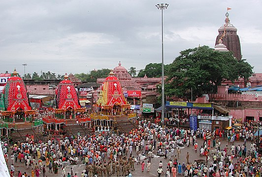 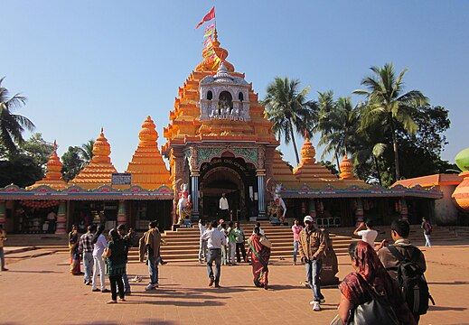 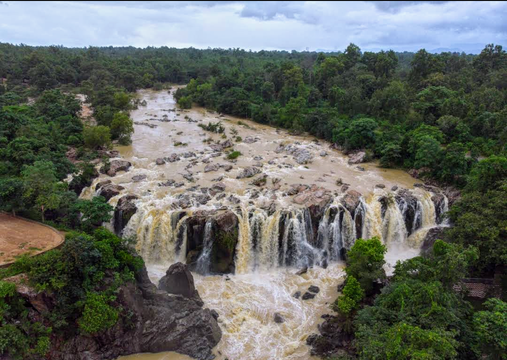